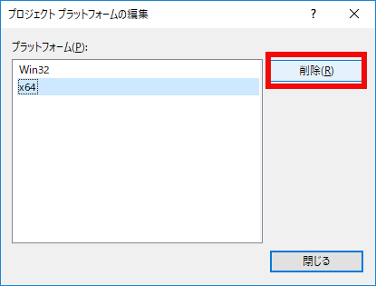

０２．FlexとBisonで計算機
０２－０２．FlexとBisonで計算機（VS2017版）
前章で、CGIとはどう記述するのかがおおむね分かったと思います。この項からは、いったんサーバーからはずれで、Windows環境のVisualStudio環境で言語作成を始めたいと思います。
この項ではVS2017で説明しますが、前項ではVS2015での実装を紹介します
まず、これから作業するための環境構築のために、簡単な計算機を作成します。
FlexとBisonのダウンロード
字句解析用のプログラムであるflexと、構文解析用のプログラムのbisonのWindows版はwinflexbisonというプロジェクトで、ネットで公開されています。https://sourceforge.net/projects/winflexbison/files/
にアクセスして、winflexbison3-latest.zipをダウンロードします。
ダウンロードしたら、zipの状態のまま、ファイルを右ボタンでクリックしてプロパティを開き、セキュリティチェックを外しておきます。こうしないとVisualStudioで読めこめません。
プロジェクトの作成
まず、VisualStudio2017を起動し、「ツールと機能を取得」を選びます。

図020201
「C++によるデスクトップ開発」を選び「C+＋に関するWindowsXPサポート」にチェックを入れ、「変更」ボタンをクリックします。

図020202
その後、新規作成－プロジェクトを選択します。

図020203
VisualC++の空のプロジェクトを作成します。
ここではoreProjectとしました。もし決まっていれば、新しい言語の名前がいいと思います。

図020204
基本プロジェクトができたら、もう一つプロジェクトを作成します。

図020205
こちらも空のプロジェクトとし、名前はFlexBisonとします。
名前の通りFlexとBisonを別プロジェクトにしますので、プロジェクト名はFlexBisonで良いと思います

図020206
２つのプロジェクトを作成したら、構成マネージャを開きます。

図020207
まずアクティブソリューションプラットフォームの編集を選択します。

図020208
x64を削除します。今回は32ビットアプリケーションとして作成するので、間違ってx64が選択されないようにします。

図020209
続いて中段のFlexBisonのプラットフォームも編集します。

図020210
x64を削除します。

図020211
続いてoreProjectも編集します。

図020212
x64を削除します。

図020213
先ほどダウンロードしたwinflexbison3-latest.zipを解凍しwinflexbisonとディレクトリ名を変更して、以下の様な構造でFlexBisonプロジェクト内にコピーします。

図020214
FlexBisonプロジェクトのビルドのカスタマイズを選択します。

図020215
カスタマイズの画面で既存ファイルの検索を選びます。

図020216
ローカルのディレクトリから、FlexBisonプロジェクト内の、先ほどコピーしたwinflexbison内のcustom_build_rules内のwin_flex_bisonを選択し、win_flex_bison_custom_build.targetsを選択します。

図020217
このまま設定するかどうか警告が出ますがはいで設定します。すると、以下のようにチェックできるように表示されますので、チェックし、OKをクリックします。

図020218
続いてFlexBisonプロジェクトのプロパティを選択します。

図020219
VC++ディレクトリの実行可能ファイルディレクトリの編集を選びます。

図020220
そこで$(ProjectDir)winflexbison\と記述しOKを選びます。

図020221
FlexBisonプロジェクトのソースファイルに新しい項目を追加します。

図020222
C++ファイルを選んで。oreProject.l（拡張子はエルです）というファイルを追加します。
もし言語名が決まっていたらその言語名.lが良いでしょう。.lという拡張子はFlexが使う拡張子です。

図020223
コードの編集画面が出たら、以下を記述します。
赤くなっているところの記述は気を付けてください。言語名.lとした人は、言語名を記述してください。
正確に言えば、この、oreProject.tab.hは、Bisonが書きだすヘッダファイル名です。ですから、この後設定するBison用のファイル名の拡張子を.tab.hにしたものになります。
%{
#include <stdio.h>
#include "oreProject.tab.h"
#define YY_SKIP_YYWRAP 1
int
yywrap(void)
{
return 1;
}
%}
%%
"+" return ADD;
"-" return SUB;
"*" return MUL;
"/" return DIV;
"\n" return CR;
[1-9][0-9]* {
double temp;
sscanf(yytext, "%lf", &temp);
yylval.double_value = temp;
return DOUBLE_LITERAL;
}
[0-9]*\.[0-9]* {
double temp;
sscanf(yytext, "%lf", &temp);
yylval.double_value = temp;
return DOUBLE_LITERAL;
}
[ \t] ;
%%
今度も、C++ファイルを選んで。oreProject.y（拡張子はワイです）というファイルを追加します。
もし言語名が決まっていたらその言語名.yが良いでしょう。.yという拡張子はBisonが使う拡張子です。
BisonはもともとUNIXのyaccですから、拡張子が.yとなります。
Bisonは、cppファイルのほかにファイル名.tab.hというヘッダを書きだします。

図020224
ファイルを作成したら、以下を記述します。
%{
#include <stdio.h>
#include <stdlib.h>
#define YYDEBUG 1
extern int yylex(void);
int
yyerror(char const *str)
{
extern char *yytext;
fprintf(stderr, "parser error near %s\n", yytext);
return 0;
}
%}
%union {
int int_value;
double double_value;
}
%token <double_value> DOUBLE_LITERAL
%token ADD SUB MUL DIV CR
%type <double_value> expression term primary_expression
%%
line_list
: line
| line_list line
;
line
: expression CR
{
printf(">>%lf\n", $1);
}
expression
: term
| expression ADD term
{
$$ = $1 + $3;
}
| expression SUB term
{
$$ = $1 - $3;
}
;
term
: primary_expression
| term MUL primary_expression
{
$$ = $1 * $3;
}
| term DIV primary_expression
{
$$ = $1 / $3;
}
;
primary_expression
: DOUBLE_LITERAL
;
%%
int main(void)
{
extern int yyparse(void);
extern FILE *yyin;
yyin = stdin;
if (yyparse()) {
fprintf(stderr, "Error ! Error ! Error !\n");
exit(1);
}
}
以下のような出力があれば成功です。

図020225
また、FlexBisonプロジェクト内を見てみましょう。以下のようにoreProject.tab.h、oreProject.tab.cpp、oreProject.flex.cppができていればOKです。

図020226
続いて、メインのプロジェクトであるoreProjectにソースファイルを追加します。既存の項目で追加してください。

図020227
FlexBisonプロジェクト内のoreProject.tab.cpp、oreProject.flex.cppを追加します。

図020228
ヘッダーファイルも既存の項目を追加します。

図020229
FlexBisonプロジェクト内のoreProject.tab.hを追加します。

図020230
メインのプロジェクトoreProjectのプロパティを開きます。

図020231
詳細設定で指定の警告を無効にするを選び編集します。

図020232
4996と数字を記述します。これはセキュリティに問題がある関数scanfなどをビルドできないようになっている設定をなくすものです。
本来は、セキュリティが強化されたバージョンを実装すべきですが、そのあたりはおいおい考えるとして、今は、警告を外しておきます。（これはこの章の最後のほうで元に戻します）

図020233
続いてoreProjectのプロパティでリンカ－システムのサブシステムにコンソールの設定をします。
こうしておかないと、プログラムの実行が終わったときに、コンソールが閉じてしまいます。

図020234
ソリューションのプロパティも設定します。

図020235
oreProjectの依存関係をFlexBisonにチェックします。
こうすることで、ビルドがFlexBisonが行われた後でoreProjectを行う形になります。

図020236
さあ、すべてが整いました。ビルド－ソリューションのリビルドを行います。

図020237
oreProject.exeが作成されすべてリビルド: 2 正常終了と出力されれば成功です。

図020238
プロジェクトの実行
それでは実行してみましょう。デバッグ－デバッグなしで開始を選びます。コンソールが出たら
10 + 35
10 + 35 >>45.000000
10 + 35 >>45.000000 34 * 23 >>782.000000 67 / 23 >>2.913043 984 - 34.5 >>949.500000
10 + 35 >>45.000000 34 * 23 >>782.000000 67 / 23 >>2.913043 984 - 34.5 >>949.500000 parser error near Error ! Error ! Error ! ....\oreProject\Debug\oreProject.exe (プロセス 9480) は、コード 1 を伴って終了しました。 このウィンドウを閉じるには、任意のキーを押してください . . .
このウィンドウを閉じるには、任意のキーを押してください . . .
サブシステムのコンソールは、プログラムが終了しても、コンソールが閉じずに出力が残るように、ロックをかけてくれます。
ここで何か入力するとコンソールが閉じます。
この後の作業
さて、次章ではいよいよ言語の開発環境を整えます。まず文法を考え、FlexとBisonはどの部分で利用し、どの部分は自作しなければいけないのか、具体的な例をあげて説明したいと思います。また、今項のFlexおよびBisonのソースは、
http://kmaebashi.com/programmer/devlang/index.html
の前橋和弥氏の記事を参考にしたものです。このサイトは、具体的に言語の作成方法も詳しく載ってますので、参考になるでしょう。このドキュメントではこのソースを土台にどんどん変化させていきます。